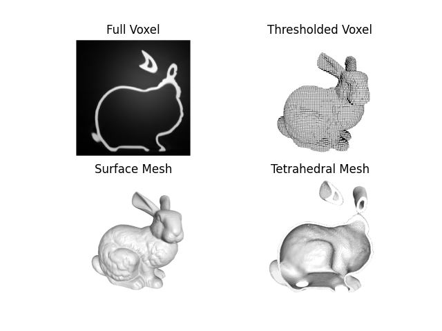

Note
Go to the end to download the full example code.
Image-based Meshing#
This example generates different types of image-based meshes using the Stanford bunny as an example.
Voxel meshes represent every voxel (three dimensional pixel) with a box,
and the voxel intensity value is stored as element data (ElemData['Image Data']) in the mesh.
The full image can be converted to a voxel mesh, with an element for every voxel, or a threshold can be applied to extract an object from the image.
The image can also be coarsened (or refined) with the scalefactor input to create a coarser mesh.
For images other than the demo image, files (or directories of files, such as DICOMs) can be read with :func:mymesh.image.read, or 3D numpy arrays can be used directly (see also: Image-based Meshing)
Calculating element centroids...Done
Surface meshes or tetrahedral volume meshes can also be extracted from the image by applying a threshold and interpolating to create a more ‘smooth’ surface (see also Contour).
Calculating element centroids...Done
fig, axes = plt.subplots(2, 2)
titles = ['Full Voxel', 'Thresholded Voxel', 'Surface Mesh', 'Tetrahedral Mesh']
meshes = [half_voxel, bunny_voxel2, bunny_surf, half_tet]
for m, ax, title in zip(meshes, axes.ravel(), titles):
m.verbose=False
if title == 'Full Voxel':
subfig, subax = m.plot(scalars='Image Data', color='Greys_r',
show=False,return_fig=True, view='-x-z')
elif title == 'Thresholded Voxel':
subfig, subax = m.plot(show_edges=True,show=False,return_fig=True, view='-x-z')
else:
subfig, subax = m.plot(show=False,return_fig=True, view='-x-z')
ax.imshow(subax.get_images()[0].get_array())
ax.set_title(title)
ax.set_axis_off()
plt.close(subfig)

RFBOutputContext()
RFBOutputContext()
RFBOutputContext()
RFBOutputContext()
Total running time of the script: (2 minutes 55.151 seconds)